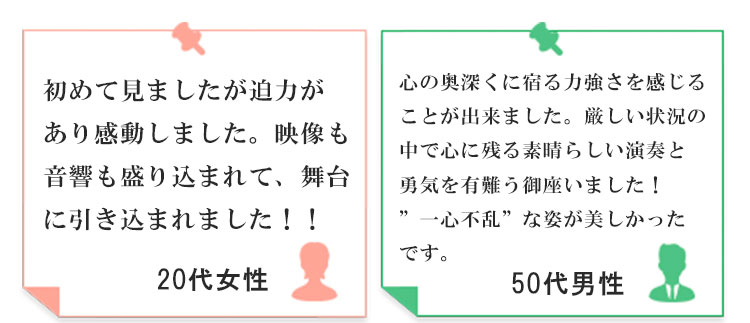

- ［重要］
-
演奏をお受けするにあたり費用に関しましてお願いがございます。普段私達は太鼓運搬用と演者の移動用に車を借りて演奏を行っています。
そのため、レンタカー代や保険代、ガソリン代等の交通費が毎度の演奏でかかっており、昨年度までは演奏先から頂いたお金と費用の差額を部員1人1人が負担しておりましたが、年々演奏を頂く機会が増え、部員の負担が増えているのが現状です。
つきましては、今年度より演奏毎に必要経費(レンタカー代や保険代、ガソリン代等の交通費)を提示させて頂きますのでご協力の程よろしくお願い致します。また、演奏当日雨天などにより演奏をキャンセルされる場合、レンタカーのキャンセル料をいただく場合がございます。ご理解のほどよろしくお願いいたします。
- ［重要］
-
演奏をお受けするにあたり費用に関しましてお願いがございます。普段私達は太鼓運搬用と演者の移動用に車を借りて演奏を行っています。
そのため、レンタカー代や保険代、ガソリン代等の交通費が毎度の演奏でかかっており、昨年度までは演奏先から頂いたお金と費用の差額を部員1人1人が負担しておりましたが、年々演奏を頂く機会が増え、部員の負担が増えているのが現状です。
つきましては、今年度より演奏毎に必要経費(レンタカー代や保険代、ガソリン代等の交通費)を提示させて頂きますのでご協力の程よろしくお願い致します。また、演奏当日雨天などにより演奏をキャンセルされる場合、レンタカーのキャンセル料をいただく場合がございます。ご理解のほどよろしくお願いいたします。



- 練習はいつしてるの？
- 基本的には毎週火曜、木曜の学校授業の放課後18:00～20:00の2時間行っています。
- どこで練習してるの？
- 場所は学内の学而会館小ホールやヘリオス，有朋会館をお借りして練習しています。
- 鼓舞猿に演奏依頼したいけどどうしていいかわからない！
- 演奏のご依頼のフォームより承っております！お気軽にご連絡ください。
- どんな演奏なのか気になる！
- YouTubeに福岡大学和太鼓部鼓舞猿の公式アカウントがあります。そちらで演奏をご覧になれます。詳しくはこちら≫
- 何分からの演奏が可能なの？
- ５分から１時間まで様々なご要望にお応えします！詳しくは演奏のご依頼よりお問い合わせください。
- 何人呼ぶことができるの？
- 現在部員が約100名在籍しておりますので、ご依頼に合わせて人数の調節をさせてもらいます。
- ［重要］
-
演奏をお受けするにあたり費用に関しましてお願いがございます。普段私達は太鼓運搬用と演者の移動用に車を借りて演奏を行っています。
そのため、レンタカー代や保険代、ガソリン代等の交通費が毎度の演奏でかかっており、昨年度までは演奏先から頂いたお金と費用の差額を部員1人1人が負担しておりましたが、年々演奏を頂く機会が増え、部員の負担が増えているのが現状です。
つきましては、今年度より演奏毎に必要経費(レンタカー代や保険代、ガソリン代等の交通費)を提示させて頂きますのでご協力の程よろしくお願い致します。また、演奏当日雨天などにより演奏をキャンセルされる場合、レンタカーのキャンセル料をいただく場合がございます。ご理解のほどよろしくお願いいたします。